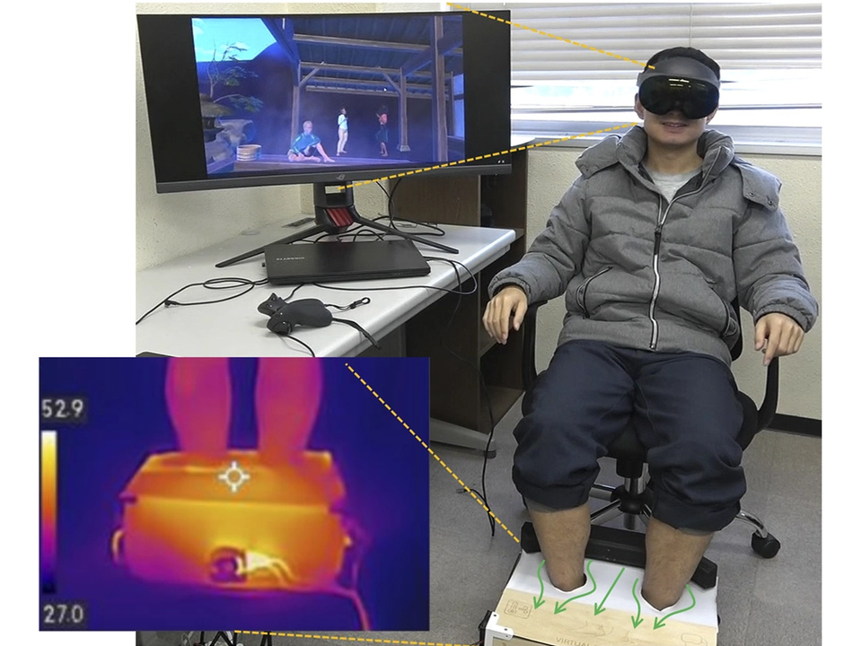

三井不動産株式会社（三井不動産東大ラボ）Mitsui Fudosan Co., Ltd. (Mitsui Fudosan UTokyo Lab)
限定空間における五感提示VR技術の研究Multisensory VR for confined spaces
物流施設やホテルなど制約の多い限定空間で働く人や利用者に向けて、錯覚技術を用いたリラクゼーション体験の実現を目指し、触覚を中心とした研究を行っています。水を使わずに、気流と温度の対比で足湯の感覚を再現するバーチャル足湯を開発しました。For people who work in or use confined spaces such as logistics facilities and hotels, we study relaxation experiences based on perceptual illusions, with a focus on touch. One result is a waterless virtual footbath that recreates the feeling of a footbath with airflow and thermal contrast.

主な成果Outputs
-
論文誌Journal
Waterless Virtual Footbath Using Airflow and Thermal Contrast: Design and Exploratory Evaluation of Relaxation-Oriented VR Experience
Frontiers in Virtual Reality, 7:1826083, June 2026.
-
プレプリントPreprint
v-Relax: Virtual Footbath Experiencing by Airflow and Thermal Presentation
arXiv:2411.05145, Nov. 2024.